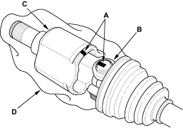
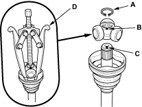

- Make a mark (A) on each roller (B) and inboard joint (C) to identify the locations of rollers and grooves in the inboard joint. Then remove the inboard joint on the shop towel (D). Be careful not to drop the rollers when separating them from the inboard joint.

- Remove the circlip (A).

- Mark the spider (B) and driveshaft (C) to identify the position of the spider on the shaft.
- Remove the spider and rollers using a commercially available bearing remover (D).